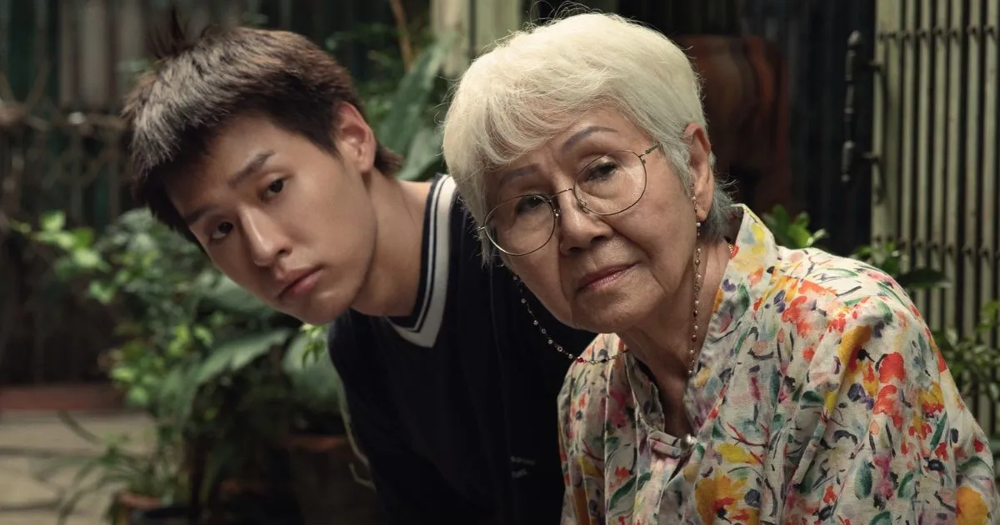

This movie will either leave you in an emotional wreck, or take you as close to one as you let it. The peaceful nature of the first two acts crescendos into a set of scenes that are so emotionally charged, they linger in your mind hours after the end credits roll. The audience, along with M, knows exactly what is to come — making the ending strike with even more power. Out of respect for the audience, the movie doesn't make an effort to trick or deceive — rather, taking them on this painfully bittersweet journey, and lets them feel what M feels.
I rarely have this strong of an emotional reaction to a film, the last being when I watched Nobody Knows, a film from Hirokazu Koreeda. This movie and Koreeda's works have many stylistic similarities, which is likely why I loved this film. These films capture the tenderness of human relationships, making them feel ever so special. This tenderness creates an incredibly natural and serene environment that allows us, as the audience, to believe what we are watching. The conversations seem realistic, as we have in our homes, and the characters and their motivations seem human. We slowly go from a third party observing other people, to almost believing we are part of their lives and are experiencing precisely what they are. This is all due to the director's ability to recreate the world they have dreamt up. There is no room for sloppiness, as it would instantly jolt us back to reality and turn us into voyeurs.
Growing up in an asian household, I have often experienced the level of emotional rawness that this film displays. M is quite vocal to his grandmother regarding his feelings about his uncles' selfishness, adding no sweetness to his words. Furthermore, in conversations with his mother, he questions her motives — all while knowing his aren't pure either. Call it unfiltered honesty or hyper transparency, M is extremely clear about how he feels and has no shame in expressing those opinions. This comes off incredibly cruel at times, but he is so comfortable with himself that he feels the freedom to let the world take a peek inside his mind. His honesty with his grandmother about his motivations is also largely why his grandmother grows to accept him; unlike most other relatives, at least she knows what she is getting with him. The dynamic between M and grandma becomes so pure that we never want to see it end. But it does — and we can't help but be heartbroken.
Pat Boonnitipat seems to understand that humans don't always grow, or not in the ways we expect them to. He expresses this by providing a high level of emotional complexity to each lead, elevating them beyond traditional drama film characters. Until the last moment, M struggles with not being rewarded the way he feels he should, far beyond when the audience expects him to. Wheeling his grandmother out of the hospital, unable to hold back his pain, he repeatedly asks her why she is being so unfair. Unable to answer, all she can do is look back as M runs away in anger. Both in tears, they are unable to understand each other, nor can the audience. Do we hope M behaves this way — no — neither do we get how he could still be this cruel. Pat lets us know that M is a real person, his mind doesn't work on our timeline, he is an emotionally devastated teenager who needs more. If everyone behaves exactly as we expect them to, they are not other people, just distilled versions of ourselves.
In parts, the reason why this film affected me as much as it did is the reality of my grandparents having passed recently and the increasing age of my parents. It ignited the guilt of not having spent as much time as I could have with them, and highlighted the importance of spending as much time as I can now. Movies like this remind us that we all will be cruel, but to treat people with as much honesty as we can and cherish the time we have left.
We watch movies to feel something. It's not always what we want to feel, but the fact that in 2-3 hours we are deeply affected to the core by someone else's story is the beauty of cinema. This is one of those special films that leave us broken, but grateful for the journey it took us on.